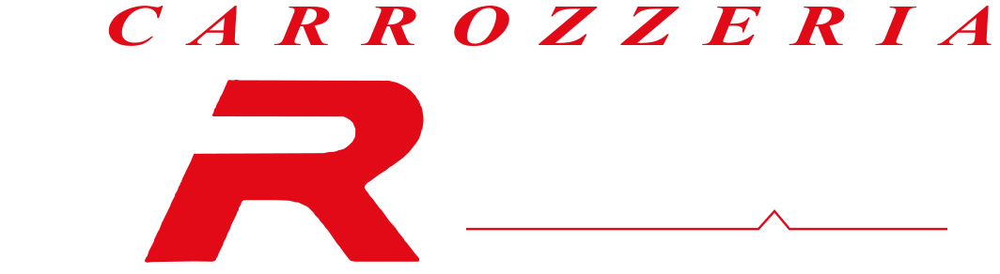
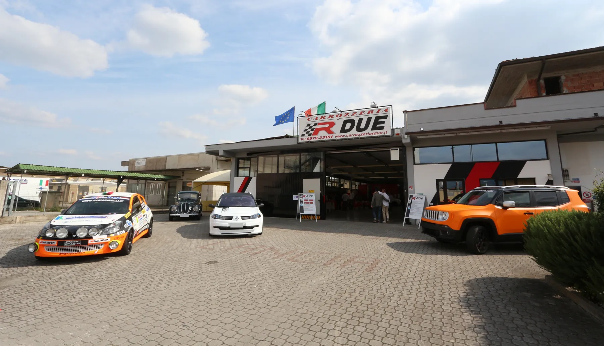
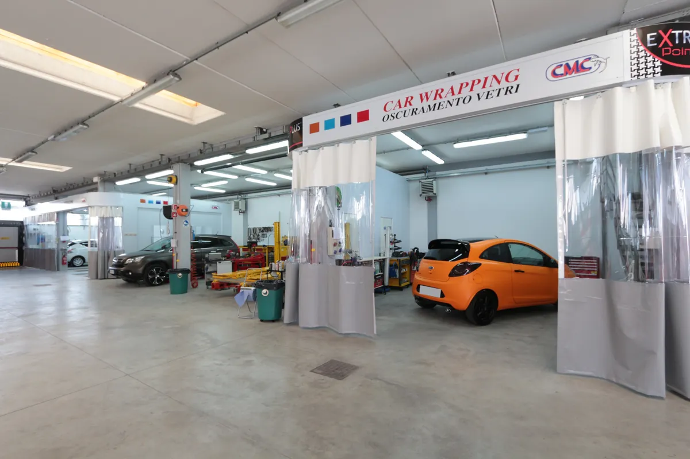
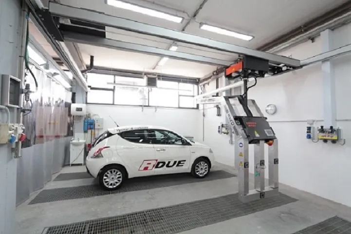
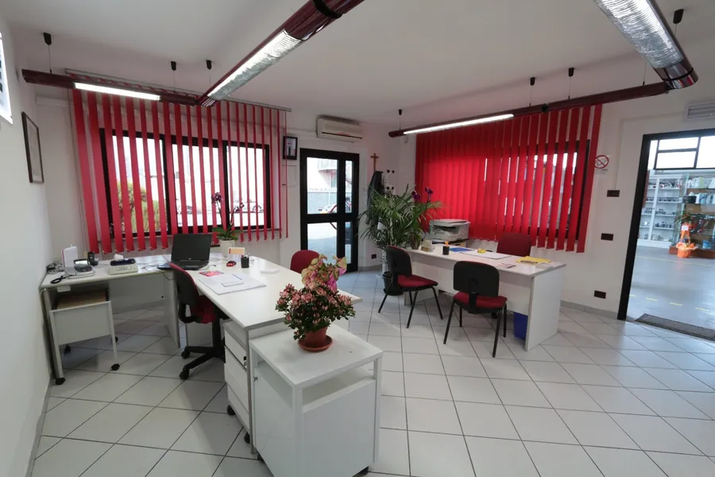

Una macchina entra.
Damiano e Siriano Fedi. Dal 1980. A Pescia, alle Macchie di San Piero.

0572 33151
Damiano e Siriano Fedi. Dal 1980. A Pescia, alle Macchie di San Piero.
Così è arrivata da noi.
Danni lievi e danni gravi, su qualsiasi auto, per qualsiasi assicurazione.
650 metri quadri, tutto al coperto. Dodici divisioni, tutte qui.
La pellicola entra in ogni piega. La vernice originale resta sotto, intatta.
Stessa macchina. Un'altra macchina.
Il trattamento nanotech protegge pelle e interni, non solo la carrozzeria.
Carbonio, pelle, volante. Ogni dettaglio passa dalle nostre mani.
Il film è una ricostruzione della BMW M2 che abbiamo wrappato. Le foto vere sono più sotto.
Dalla botta sul parafango alla Ferrari rivestita a mano. Ecco cosa facciamo, tutto.
Una per volta, con quello che è stato fatto.
Prima di passare dall'assicurazione. Ti diciamo come muoverti.
Fermati in un punto sicuro. Se ci sono feriti chiama il 112.
Constatazione amichevole firmata da entrambi, se si può. Fai qualche foto ai danni.
348 0151978 o 348 0151979. Se l'auto non si muove, organizziamo il recupero.
Gestione completa del sinistro, dal ritiro dell'auto alla riconsegna.
Professionisti seri, affidabili e molto bravi nel loro mestiere.
Officina organizzata, gentili e disponibili.
Personale preparato e competente.

Banchi dima, spettrofotometro, cabina di verniciatura, robot a infrarossi, vernici all'acqua. Associati Federcarrozzieri e Oxygen Sinistri.



Lunedì - venerdì
8:30-13:00 e 14:00-19:00
Sabato mattina su appuntamento
Via Caravaggio 2, 51017 Pescia (PT)
Zona industriale Macchie di San Piero